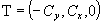

NOTE Definition according to ISO/CD 10303-42:1992
An ellipse is a conic section defined by the lengths of the semi-major and semi-minor diameters and the position
(center or mid point of the line joining the foci) and orientation of the curve. Interpretation of the data shall be as
follows:
C = position.location
x = position.p[1]
y = position.p[2]
z = position.p[3]
R1 = semi axis 1
R2 = semi axis 2
and the ellipse is parameterized as:

The parameterization range is 0 ≤ u <≤ 2π (0 ≤ u ≤ 360
degree). In the placement coordinate system defined above, the ellipse is the equation C = 0, where

The positive sense of the ellipse at any point is in the tangent direction, T, to the
curve at the point, where


 EXPRESS-G diagram
EXPRESS-G diagram Link to this page
Link to this page